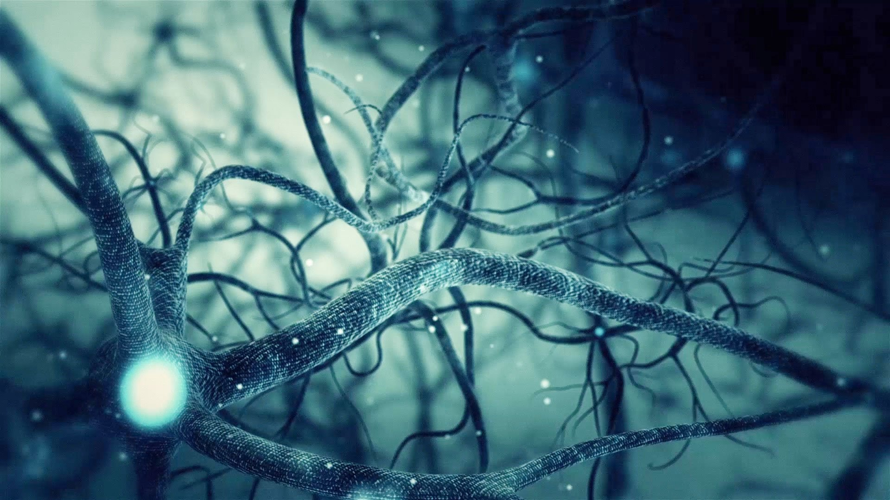
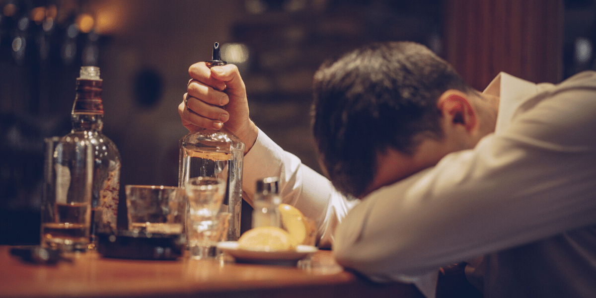

Нервная система

Как алкоголь влияет на нервную систему?
Амнезия. Алкоголь влияет на гиппокамп (часть мозга, которая отвечает за память и эмоциональный фон), блокируя подачу импульсов. Это проявляется в проблемах с запоминанием информации и её дальнейшей передачей. Утром после бурной вечеринки человек может вообще не вспомнить момент, когда он начал выпивать;
Двоение в глазах. Спиртные напитки воздействуют на глазодвигательный центр мозга, формируя там своеобразный очаг торможения. Это вызывает несогласованную работу глазных мышц, которая проявляется в двоении (алкогольная диплопия);
Мигрень. Одна из разновидностей головной боли при употреблении спиртного возникает из-за застоя крови. Мозг активно насыщается кровью из-за расширения сосудов, но в то же время растёт её густота и вязкость, замедляется кровоток. При формировании ацетальдегида сосуды с молниеносной скоростью сужаются. Этот спазм мешает снабжению мозга кровью. Отсюда мигрень.
Амнезия. Алкоголь влияет на гиппокамп (часть мозга, которая отвечает за память и эмоциональный фон), блокируя подачу импульсов. Это проявляется в проблемах с запоминанием информации и её дальнейшей передачей. Утром после бурной вечеринки человек может вообще не вспомнить момент, когда он начал выпивать;
Двоение в глазах. Спиртные напитки воздействуют на глазодвигательный центр мозга, формируя там своеобразный очаг торможения. Это вызывает несогласованную работу глазных мышц, которая проявляется в двоении (алкогольная диплопия);
Мигрень. Одна из разновидностей головной боли при употреблении спиртного возникает из-за застоя крови. Мозг активно насыщается кровью из-за расширения сосудов, но в то же время растёт её густота и вязкость, замедляется кровоток. При формировании ацетальдегида сосуды с молниеносной скоростью сужаются. Этот спазм мешает снабжению мозга кровью. Отсюда мигрень.

Что происходит, когда человек начинает употреблять наркотики?
Человек постепенно становится сконцентрированным на самом себе. Он перестает замечать, что происходит вокруг. Наиболее явно это проявляется в таком явлении, когда находясь рядом с наркозависмым вы понимаете, что его как-бы с вами нет, он находится в своих мыслях, полностью погружен в себя.
Он перестает испытывать положительные эмоции без наркотиков, а потом и принимая наркотики. Также они обезболивают — человек под наркотиками перестает чувствовать депрессию, безнадежность или отчаяние). В конце концов наркотики становятся единственным способом не чувствовать моральные страдания, но и до счастья и радости они уже не поднимают.
Он неспособен сконцентрироваться на чем-либо, а то, что он делает, приносит, как правило, только вред.
Наркотики нарушают нормальную работу разума и это проявляется в ухудшении памяти, трудностях в формулировки мыслей и общении. Нарушается последовательность в запоминании событий и анализе данных, поэтому наркоманы часто находятся в состоянии, когда реальные воспоминания смешиваются с воображением и наркотическими галлюцинациями.
Человек постепенно становится сконцентрированным на самом себе. Он перестает замечать, что происходит вокруг. Наиболее явно это проявляется в таком явлении, когда находясь рядом с наркозависмым вы понимаете, что его как-бы с вами нет, он находится в своих мыслях, полностью погружен в себя.
Он перестает испытывать положительные эмоции без наркотиков, а потом и принимая наркотики. Также они обезболивают — человек под наркотиками перестает чувствовать депрессию, безнадежность или отчаяние). В конце концов наркотики становятся единственным способом не чувствовать моральные страдания, но и до счастья и радости они уже не поднимают.
Он неспособен сконцентрироваться на чем-либо, а то, что он делает, приносит, как правило, только вред.
Наркотики нарушают нормальную работу разума и это проявляется в ухудшении памяти, трудностях в формулировки мыслей и общении. Нарушается последовательность в запоминании событий и анализе данных, поэтому наркоманы часто находятся в состоянии, когда реальные воспоминания смешиваются с воображением и наркотическими галлюцинациями.
Как никотин влияет на нервную систему?
В процессе курения никотин становится для мозга своеобразным стимулятором, ускоряя проведение нервных импульсов, но затем мозговые процессы сильно тормозятся, срабатывает потребность мозга в отдыхе. По мере привыкания мозг сам начинает требовать «дозу», не желая работать самостоятельно, без допинга.
Курящие люди чаще подвержены переутомлению нервной системы и неврастении. Формируется порочный круг: курильщик, который много работает, начинает курить больше и чаще, чтобы подстегнуть организм, и получает ещё большее переутомление. Такие люди могут наблюдать у себя расстройство памяти, нарушение сна, головную боль, частую смену настроения, снижение работоспособности
Курение пагубно сказывается и на вегетативной нервной системе, ухудшая работу внутренних органов — расстраивается деятельность сердечно-сосудистой системы, нарушается функционирование органов пищеварения.
В процессе курения никотин становится для мозга своеобразным стимулятором, ускоряя проведение нервных импульсов, но затем мозговые процессы сильно тормозятся, срабатывает потребность мозга в отдыхе. По мере привыкания мозг сам начинает требовать «дозу», не желая работать самостоятельно, без допинга.
Курящие люди чаще подвержены переутомлению нервной системы и неврастении. Формируется порочный круг: курильщик, который много работает, начинает курить больше и чаще, чтобы подстегнуть организм, и получает ещё большее переутомление. Такие люди могут наблюдать у себя расстройство памяти, нарушение сна, головную боль, частую смену настроения, снижение работоспособности
Курение пагубно сказывается и на вегетативной нервной системе, ухудшая работу внутренних органов — расстраивается деятельность сердечно-сосудистой системы, нарушается функционирование органов пищеварения.